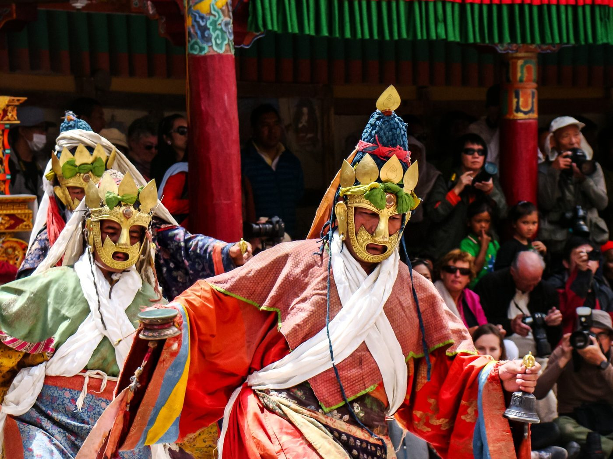

Chapter 22: Music and Dance of the North-East and the Himalaya¶
The mountain arc that runs from Kashmir through Himachal Pradesh, Uttarakhand, Sikkim and the Darjeeling hills to Arunachal Pradesh, and the hills and valleys of the north-east around the Brahmaputra, are home to a greater variety of peoples, languages and religions than any other part of India. Speakers of Indo-Aryan languages (Assamese, Bengali, Nepali, the Pahāṛī languages and Kashmiri), of many Tibeto-Burman languages (Meitei, the Naga languages, Mizo, Bodo, Garo, Kokborok, Ladakhi, Lepcha, Monpa and others) and of the Austroasiatic Khasi live side by side. Their religions include Vaiṣṇava and Śākta Hinduism, Tibetan Buddhism, Islam, Christianity, which became the majority religion of Nagaland, Mizoram and Meghalaya in the twentieth century, and indigenous religions such as the Meitei worship of the lai, the Khasi Niam Khasi and the Donyi-Polo faith of Arunachal. Their music and dance are correspondingly diverse.
Earlier chapters have described the parts of this world that entered the national canon of “classical” dance — Manipuri and Sattriya (Chapter 18) — together with the devotional music of the Assamese sattras and nāmghars (Section 9.9). Seen from Delhi or Chennai these regions are margins; seen from Guwahati, Shillong or Leh they are centres, with performance traditions of their own and with neighbours across the borders in Bangladesh, Myanmar, Tibet, Bhutan and Nepal. The account that follows moves from Assam outside the sattras and Manipur beyond the classical stage to the hill states of the north-east and to Sikkim and the Darjeeling hills, then to the ritual music and masked dance of Tibetan Buddhism, the lay musicians of Ladakh and the Tibetan exiles, and finally to Kashmir, Himachal Pradesh and Uttarakhand. The material culture, governance and ecological knowledge of the region’s Ādivāsī peoples are treated in Volume 23, Jana–Jāti, which also describes the Hornbill Festival of Nagaland and the log drums of the Naga villages.
22.1 Assam beyond the Sattra¶
22.1.1 Bihu¶
The three Bihu festivals of Assam mark the agricultural year: Bohāg or Rongālī Bihu at the Assamese new year in mid-April, before the sowing; Kātī or Kongālī Bihu in autumn, when the granaries are empty; and Māgh or Bhogālī Bihu in January, after the harvest. Bohāg Bihu is the festival of song and dance. Traditionally young men and women sang and danced in the fields and groves, away from the village, in the days of the festival, and bands of singers (husorī) went from house to house singing blessings and receiving gifts. The Bihu songs (bihugīt or bihunām) are short lyrical verses of love, longing, nature and village life, often frankly erotic, sung to a small number of melodies and capped by the cries of the dancers; Praphulladatta Goswami’s collection of some two hundred and sixty songs, with English translations, remains a basic source (Goswami 1957). The instruments are the double-headed ḍhol, played with a stick and the hand, whose rhythms drive the dance; the buffalo-horn pipe pepā; the bamboo jaw harp gogonā, traditionally played by women; small cymbals; the split-bamboo clapper ṭokā; and the clay whistle xutulī.
In the twentieth century Bihu moved from the fields to the public stage. Urban committees in Guwahati and other towns organised staged Bihu from the middle of the century, with competitions for dance troupes and for the “Bihu queen”; the dance was standardised into a sequence of steps and hip movements, and the songs entered the radio and the record industry. Purists regretted the loss of the field Bihu; the staged festival, for its part, made Bihu the emblem of Assamese identity, performed at every public occasion and in the diaspora.
22.1.2 Ojāpāli, Deodhanī and the narrative song¶
Assam has a long tradition of narrative singing in which a leader (ojā) and a chorus (pāli) present a sacred story with song, gesture and dance, the chorus keeping time with large cymbals. Two kinds of ojāpāli are distinguished. The sukanānnī ojāpāli sings the story of the snake goddess Manasā from the Assamese Padmāpurāṇa attributed to the poet Sukavi Nārāyaṇadeva, and is performed at the worship of the goddess; the byāha-gowā ojāpāli sings episodes from the epics and Purāṇas, with the ojā explaining the songs in prose and the dāināpāli (the chief assistant) adding humour. The form, strongest in the old district of Darrang, combines learned rāga-based singing, hand gestures and footwork; scholars have seen in it one of the sources of the dramatic and dance traditions of the sattras.
In the same worship of Manasā, the deodhanī is a woman possessed by the goddess who dances, with a sword and shield, to the drums and the songs of the ojāpāli; the dance, performed in trance, has been adapted for the stage as a “folk dance” of Assam. The worship of Manasā in the Brahmaputra valley and in Bengal is one of the main settings of ritual song in eastern India, and its singers preserve a large body of narrative poetry.
22.1.3 Islamic song: Zikir and Zārī¶
The Muslims of the Brahmaputra valley sing devotional songs called zikir (from Arabic dhikr, remembrance), attributed by tradition to the Sufi Azan Fakir (Shāh Mīrān), who is believed to have come to Assam in the seventeenth century and settled near Sivasagar. The songs, in Assamese, use the melodies and imagery of Assamese folk and devotional song to express Islamic teaching and Sufi devotion; they are sung by a leader and chorus, with clapping, and have long been heard by Hindus and Muslims alike. The related zārī are songs of lament for the martyrs of Karbalā. Azan Fakir’s shrine at Saraguri Chapori near Sivasagar is a place of pilgrimage, and the annual commemoration there is attended by people of both communities.
22.1.4 Goālpārīyā and Kāmrūpīyā song¶
The western districts of Assam have song traditions of their own. The Goālpārīyā songs (goālpārīyā lokagīt) of the old Goalpara district, in a dialect close to the Rajbanshi speech of north Bengal, include the songs of the mahouts and elephant-catchers (māhut bandhu re), of the buffalo herders, and of women waiting for absent lovers, sung to the long-necked plucked lute dotorā; the singer Pratima Barua Pandey (1934–2002), born into the family of the zamindars of Gauripur, who had themselves been famous elephant-catchers, made them known throughout Assam and beyond. The Kāmrūpīyā songs of the Kamrup district include devotional and seasonal songs and the songs of the boatmen. Bhupen Hazarika and other modern composers drew heavily on both (Chapter 11).
22.1.5 The peoples of the valley¶
The Bodo, the largest of the Tibeto-Burman peoples of the plains of Assam, celebrate their new year festival, Bwisāgu, in mid-April with the bāgurumbā, a dance of women in long lines whose spreading shawls have earned it the name “butterfly dance”. Their great ritual is the kherāi, the worship of the supreme deity Bathou and the other gods, in which a priestess (doudinī) dances in trance through a long series of dances, each with its own rhythm, while musicians play the long bamboo flute siphuṅ, the drum khām, the bowed lute serjā and cymbals. The Mising, a riverine people of upper Assam, celebrate the spring festival of Ali-āye-ligāṅ, at the start of the sowing, with the dance gumrāg and with oinitom songs; Rabha, Tiwa, Karbi, Dimasa and other communities have their own festivals and dances. In the tea gardens of Assam, the descendants of labourers brought from Chotanagpur and central India in the nineteenth century maintain the jhumur songs and dances of their homelands, now a recognised genre of Assamese performance and an important part of the region’s popular music.
22.2 Manipur beyond the Classical Stage¶
Manipuri dance as it is seen on the national stage grew out of the Vaiṣṇava rāsalīlā and saṅkīrtana and the Meitei Lai Haraoba (Chapter 18). Behind it lies a wider Meitei musical culture. The pena, a fiddle with a body made from a half coconut shell and a bamboo neck, played with a bow strung with horsehair and hung with small bells, is the essential instrument of the Lai Haraoba: its player (penakhongbā) accompanies the maibī priestesses through the days of the festival, and the instrument was also used by bards to sing the Meitei epic and ballad repertoire, including the story of the lovers Khamba and Thoibi. In the Khongjom parbā, a singer accompanied by a small drum narrates the battle of Khongjom of 1891, in which the army of Manipur fought the British, and other episodes of Meitei history; the form, which grew up after the battle and the loss of independence, is a vehicle of Manipuri historical memory.
The Meitei martial art thang-ta (“sword and spear”, part of the larger tradition called huyen langlon) has ritual and demonstration forms performed to the drum, and its movements have been used by modern choreographers and theatre directors, notably Ratan Thiyam (Chapter 19); its history as a martial art is treated in Volume 20, Yuddha and Dhanurveda. The Shumang Līlā, the comic courtyard theatre of Manipur, is described in Chapter 20. The hill peoples of Manipur — Tangkhul, Mao, Kabui and other Naga communities, and the Kuki-Chin peoples — have festivals, dances and song traditions that belong with those of Nagaland and Mizoram, described below, rather than with the Meitei valley.
22.3 The Hill States¶
22.3.1 Nagaland¶
The Naga peoples — Angami, Ao, Chakhesang, Konyak, Lotha, Sema, Rengma, Phom and others in Nagaland, and related communities in Manipur, Arunachal Pradesh and Myanmar — had, before the twentieth century, a musical life organised around the agricultural cycle, the village and its men’s and women’s dormitories, feasts of merit, warfare and the rites of the dead. Songs accompanied work in the fields, often sung by groups in alternation, the celebration of the harvest and of feasts, courtship and mourning; dances were performed by men in full ornament with spears and shields, and by women in lines. Many Naga song traditions are polyphonic, with two or more voices moving in parallel or against a held note, and the Chakhesang li, sung by women, has been brought to wide audiences by modern performers (see Volume 23). Instruments include bamboo and buffalo-horn trumpets, bamboo flutes, the jaw harp, a one-stringed bowed fiddle and the great log drums of some villages.
The twentieth century transformed this world. American Baptist missionaries, active among the Ao from the 1870s, brought Christianity, literacy and the hymn, and by the end of the century most Nagas were Christian; the hymn and the church choir became the central musical institutions of village life, and many old songs, associated with headhunting, feasts of merit and the old religion, were abandoned. In recent decades churches, schools, the state government’s festivals and young musicians have revived and adapted older songs and dances, and Nagaland has also become known for its rock, gospel and folk-fusion musicians.
22.3.2 Meghalaya: Khasi, Jaintia and Garo¶
The Khasi and Jaintia (Pnar) of the central hills of Meghalaya speak Austroasiatic languages and follow matrilineal descent. Their great dances are religious. The Shad Suk Mynsiem (“dance of the joyful heart”), held each April in Shillong by followers of the indigenous Khasi religion, is a thanksgiving in which unmarried women in rich silks and gold ornaments dance with downcast eyes and small steps in the centre, while men with swords and fly-whisks dance around them in a protective outer circle. The Shad Nongkrem, held in autumn at Smit, the seat of the chief (syiem) of Hima Khyrim, is a five-day festival of thanksgiving and propitiation with dances of the same kind. The music is provided by drums (ksing), the double-reed pipe tangmuri, the small plucked lute duitara and flutes. The Garo of the western hills celebrate the harvest festival Wangala in honour of the sun god Saljong, with long lines of dancers moving to the beat of the long dama drums and the sound of brass gongs (rang) and buffalo-horn trumpets; since 1976 a “Hundred Drums Wangala” festival has been held near Tura, bringing village troupes together in competition.
The Welsh Calvinistic Methodist mission, which began work at Sohra (Cherrapunji) in 1841, gave the Khasi a written language and a hymnody, taught through the tonic sol-fa system of notation. Choral singing became one of the great passions of Khasi and Jaintia life, and Shillong developed a rich musical culture of church choirs, brass bands and, from the 1960s, rock and blues music sung in English and Khasi. The success of the Shillong Chamber Choir in a national television competition in 2010 drew national attention to this tradition.
22.3.3 Mizoram¶
The Mizos, Kuki-Chin peoples of the southern hills, are known outside the region for the cheraw, in which dancers step nimbly in and out of pairs of horizontal bamboo poles clapped together and apart by seated men, now performed at the spring festival Chapchār Kūt and on every public occasion. Older Mizo music included many named song types for feasts, hunting, war, love and mourning, accompanied by gongs and the drum (khuang). Welsh and English Baptist and Presbyterian missionaries arrived in the 1890s, and a series of religious revivals from 1906 onwards made Mizoram almost wholly Christian. The revivals produced something unexpected: after an early period in which only translated Western hymns were sung, Mizo Christians began in the early decades of the twentieth century to compose hymns in a Mizo style, with indigenous melodic idioms, sung slowly and repeatedly to the drum at gatherings and wakes, and accompanied by a swaying dance of the congregation. These songs, sung in the practice called lengkhawm, became the heart of Mizo religious life and one of the most striking examples in India of a mission religion taking on a local musical form.
22.3.4 Tripura and Arunachal Pradesh¶
The Reang (Bru) of Tripura are known for the hojāgiri, a dance that turns balance into an art. Women dancers stand on earthen pots and move only from the waist down, so that the pitchers, lamps and bottles balanced on their heads stay still while the body below them sways, to the music of bamboo flutes, drums and cymbals; the dance has become the emblem of the community on the state’s stages. The Tripuri, whose dynasty ruled the former kingdom, celebrate the Garia festival in April with dances of their own.
Arunachal Pradesh, home to some twenty-six major peoples and many smaller groups, divides musically between west and east. In the west the Monpa and Sherdukpen are Buddhists of the Tibetan tradition, with monastic cham (below), the masked yak dance and the dance-drama Aji Lhamu, a regional form of the Tibetan opera. Among the Tani-speaking peoples of the centre and east — Adi, Apatani, Nyishi, Galo, Tagin — the central figure is the priest-singer (miri among the Adi), who chants long narratives of origin and migration at festivals and rites of healing; at the Adi harvest festival of Solung the women dance the ponung in a circle around a male leader who sings and keeps time with a sword fitted with jingles, so that the singer of narratives is also the leader of the dance. The Wancho and Nocte in the east, related to the Konyak Nagas, share many features of Naga music.
22.4 Sikkim and the Darjeeling Hills¶
Sikkim, a Buddhist kingdom under the Namgyal dynasty from the seventeenth century until it became part of India in 1975, and the hills of Darjeeling and Kalimpong, have three main communities: the Lepcha, the earliest inhabitants; the Bhutia, of Tibetan origin; and the Nepali-speaking majority, many of whose ancestors came from Nepal in the nineteenth century. The monasteries maintain the ritual music and cham of Tibetan Buddhism; the festival of Pang Lhabsol, held in late summer, honours the mountain deity of Kangchenjunga with a masked dance in which the deity and his attendants appear, and is associated with the oath of brotherhood between the Lepcha and Bhutia peoples. The Lepchas have their own songs of origin and of the mountain landscape, and their bamboo flute and zither traditions.
The Nepali communities brought the music of the hills of Nepal: the maruni, danced at the festival of lights (Tihār) by dancers in women’s costume, accompanied by a clown; the frame drum ḍamphu and the selo songs of the Tamang; the pañcai bājā band of the Damai tailor-musicians at weddings; and the sung duets of men and women (dohorī) in which singers exchange improvised couplets. Darjeeling became, in the twentieth century, a centre of modern Nepali song: the composer Amber Gurung (1938–2016), who began his career there, later composed the music of the national anthem adopted by Nepal in 2007. The music of these hills is a reminder that the borders of the Indian state cut across musical worlds shared with Nepal, Bhutan and Tibet.
22.5 Tibetan Buddhist Ritual Music¶
22.5.1 The monasteries of the Indian Himalaya¶
The Buddhist monasteries of Ladakh (Hemis, Thiksey, Lamayuru and others), of Lahaul, Spiti and Kinnaur in Himachal Pradesh (among them Tabo, founded in 996, and Key), of Sikkim (Pemayangtse, Rumtek), and of the Monpa country of Arunachal Pradesh (Tawang, founded in 1680–81) belong to the Tibetan Buddhist tradition, whose music has been studied above all by Mireille Helffer (Helffer 1994). Music in these monasteries is liturgical. It accompanies the daily services, the long rituals of offering and of meditation on the deities (sādhanā), and the great annual festivals, and it is understood as an offering — the Tibetan word for the instrumental music of the rite, mchod rol, means “offering music” — to the buddhas, the protective deities and, in some rites, to the spirits who must be pacified. The Buddhist chanting of Ladakh was inscribed by UNESCO on its list of the Intangible Cultural Heritage in 2012.
22.5.2 Chant and notation¶
The core of the liturgy is chant. Much of it is recitation of texts on a single pitch or a narrow range, at varying speeds; the most solemn passages are sung in a melodic style (dbyangs), in which each syllable is stretched over long, slowly changing tones and subtle shifts of vocal colour. These melodies are written in a graphic notation (dbyangs yig), in which curved lines above the text show the rise and fall of the voice, with additional signs for timbre and ornament; the notation, which differs between monastic orders and monasteries, is an aid to a melody learnt from a teacher, not a score. The Gelug tantric colleges of Gyuto and Gyume, re-established in India after 1959, are famous for a deep chant in which each monk sings a very low fundamental and makes an overtone audible above it, so that a single voice seems to produce a chord.
22.5.3 The instruments¶
The monastic ensemble has no strings. It consists of a pair of long telescopic copper trumpets (dung chen), which produce a deep fundamental and a few overtones; a pair of double-reed shawms (rgya gling), which play melodies; conch-shell trumpets (dung dkar) and, in some rites, the short trumpet made from a human thighbone (rkang gling); large frame drums on a handle (rnga); two kinds of cymbals, the flat sil snyan and the bossed rol mo; and the handbell (dril bu) and small hourglass drum (ḍamaru) used by the officiant. The instruments play in fixed sequences of entries, rolls and accelerating and decelerating strokes on the cymbals and drums, which mark the sections of the liturgy, invite the deities and accompany offerings; the shawm melodies, like the chants, are learnt orally with the help of notation. Within the monastery the musicians are monks; the music is part of a monk’s training rather than a profession (Helffer 1994).
22.6 Cham: The Masked Dance of the Monasteries¶
The best-known public performances of Tibetan Buddhism are the masked dances (’cham) performed by monks in the courtyards of the monasteries at annual festivals. A cham is not a play but a ritual: the dancers, wearing brocade robes and great painted masks, embody the deities of the monastery’s meditation and protective pantheon, and their movements, prescribed in choreographic manuals (’cham yig) and accompanied by the monastic orchestra, enact the subjugation of the forces hostile to the Dharma. The dances often culminate in the ritual destruction of an effigy (linga) of dough representing these forces, which is cut into pieces and offered or cast away. Other episodes are lighter: skeleton dancers representing the lords of the cremation ground, the deer and stag dancers, and comic figures such as the old man (Hashang) and his children, who entertain the crowd between the solemn dances. The Black Hat dance (zhwa nag), in which dancers in broad-brimmed hats perform a slow, powerful sequence of steps and turns, is associated by tradition with the monk Lhalung Palgyi Dorje, said to have killed the anti-Buddhist king Langdarma in the ninth century while disguised as a dancer (Kohn 2001; Pearlman 2002).
Each monastery has its own calendar. At Hemis in Ladakh (Figure 22.1), the largest festival, held on the tenth day of the fifth Tibetan month, honours Padmasambhava, the Indian master credited with establishing Buddhism in Tibet, whose eight manifestations appear in the dances; at Tawang the Torgya is held in winter; and in Sikkim the Pang Lhabsol and the dances held at the end of the year mark the ritual year of the former kingdom. Richard Kohn’s study of the Mani Rimdu festival of the Sherpa monasteries of Nepal, the most detailed account of a cham festival in its ritual context, shows that the public dances are only the visible part of a much longer cycle of rites performed by the monks over many days (Kohn 2001). Today the festivals draw large numbers of tourists, and state governments promote them as cultural heritage; the monks, for their part, continue to perform them as rites whose efficacy does not depend on the audience.


22.7 Ladakh and the Tibetan Exiles¶
22.7.1 The lay musicians of Ladakh¶
Outside the monasteries, the music of Ladakh was long the work of hereditary musicians, the Mon and the Beda, who played the shawm (surna) and a pair of kettledrums (daman) at weddings, festivals, archery contests, polo matches and the courts of the kings and nobles. Like the drummers of the central Himalaya (below), they were indispensable and socially subordinated: the farming majority would not intermarry or eat with them. The court repertoire included songs and slow, stately dances such as the shondol, performed at the royal court of Leh, and Ladakhi villages have a large repertoire of songs for weddings, work, the seasons and the praise of lamas and kings, sung in groups and often accompanied by line dances. The Muslim communities of Leh and of Kargil, the latter largely Shia, add their own devotional songs and the elegies of Muḥarram (Chapter 9).
22.7.2 The Tibetan community in India¶
Since 1959, when the Dalai Lama and many thousands of Tibetans took refuge in India, Dharamsala in Himachal Pradesh and the Tibetan settlements of Karnataka, Himachal, Uttarakhand, Sikkim and elsewhere have been the main centres of Tibetan culture outside Tibet. The Tibetan Institute of Performing Arts, founded at Kalimpong in 1959 and soon moved to McLeod Ganj above Dharamsala, has trained performers of Tibetan folk song and dance, court music and the opera (a lce lha mo), whose annual festival it hosts; the great monasteries, re-established in south India, continue the ritual traditions described above. Keila Diehl’s study of music among the refugees of Dharamsala shows how the community balanced the preservation of a “pure” Tibetan culture against the pleasures of Hindi film song, Western rock and new forms of Tibetan popular music, and how young musicians used song to define what it meant to be Tibetan in exile (Diehl 2002).
22.8 Kashmir, Himachal Pradesh and Uttarakhand¶
22.8.1 Kashmir¶
The art music of the Kashmir valley is the sūfiyāna kalām or sūfiyāna mūsīqī, sung by a group of male singers who accompany themselves on the hammered dulcimer santūr, the long-necked lute sehtār, the sāz-e Kashmīr (a bowed lute) and the small drum dokra; its modal system of maqāms, distinct from both the Hindustani rāga and the Persian dastgāh, and its Sufi poetry in Persian and Kashmiri place it, as Józef Pacholczyk has shown, between the musics of Central Asia and of north India (Pacholczyk 1996). Its devotional setting is described in Chapter 9. The santūr entered Hindustani concert music in the second half of the twentieth century, above all through the Jammu-born musician Shivkumar Sharma, who adapted it for the performance of rāgas.
Popular music in the valley includes the chakkrī, a lively song in Kashmiri performed at weddings and gatherings with harmonium, rabāb, sāraṅgī, the clay pot nout and the drum; the lādī shāh, satirical ballads on current affairs sung by itinerant performers with an iron rattle; and the women’s wedding songs (wanvun), sung in alternation by two groups. The women’s dance rouf and the satirical theatre Bhāṇḍ Pāthar are described in Chapters 21 and 20. Jammu and the hills to its south and east belong to the Pahāṛī world of Himachal, and Ladakh to the Tibetan world described above.
22.8.2 Himachal Pradesh: the deities in procession¶
In the valleys of Himachal Pradesh, above all in Kullu, Mandi, Shimla and Kinnaur, religious life centres on village deities (devtā) who are carried in palanquins to festivals, consulted through oracles and honoured with music. The music of the deity is played by hereditary musicians of low-caste communities on large drums (ḍhol, nagārā), the shawm (śahnāī), and long brass trumpets: the straight karnāl and the curved narsiṅgā or raṇsiṅgā, whose blasts announce the god’s arrival. At the Dussehra of Kullu, held in October, hundreds of village deities gather with their musicians to attend the god Raghunāth, and the valley resounds with their bands. The circle dance nāṭī, danced in long chains at fairs (Chapter 21), the songs of seasons and of love (jhūrī, lāmaṇ) and the narrative songs of local heroes complete a regional repertoire that has also been carried, since the 1980s, by a thriving cassette and video industry in the Pahāṛī languages.
22.8.3 Uttarakhand: drum, possession and dance¶
In Garhwal and Kumaon, the two regions of Uttarakhand, Andrew Alter’s study of Garhwali music shows how drumming lies at the centre of ritual and social life (Alter 2008). The hereditary drummers (Bājgī, Auji or Dās), Dalits whose low status coexists with their indispensable ritual knowledge, play the large double-headed ḍhol and the small kettledrum damaũ at weddings, festivals and above all at the rites of possession. Their rhythmic repertoire is vast and named: there are rhythms to call each deity, to accompany each phase of a rite, to announce events, and to accompany dances, and a body of drummers’ lore, the ḍhol sāgar, describes the drum, its parts and its sacred syllables. In the jāgar (Chapter 21) the singer-drummer (jagariyā) sings the deity’s story until the god “dances” in the body of a medium; in the Pāṇḍav līlā the drums call the heroes of the Mahābhārata into the bodies of village dancers, a performance William Sax has studied as a means by which Garhwalis enact their own personhood and community (Sax 2002).
Kumaon has its own forms. The choliyā, a dance of men with swords and shields performed in wedding processions to the music of ḍhol, damaũ, raṇsiṅgā and the bagpipe maśakbīn — introduced to the hills in the colonial period through military bands — re-enacts, in its leaps and mock combats, the martial culture of the region. The hurkiyās, bards who accompany themselves on the small hourglass drum huṛkā, sing ballads of local heroes and accompany agricultural work. Modern Garhwali and Kumaoni song, carried by cassettes from the 1980s, has its own stars, among whom the Garhwali singer and poet Narendra Singh Negi became one of the voices of the movement for a separate hill state, achieved in 2000. Peter Manuel’s study of the cassette industry noted the importance of such regional markets, which brought the songs of the hills to migrants in the cities of the plains (Manuel 1993).
22.9 Change and Continuity¶
Table 22.1 summarises some of the forms described in this chapter.
| Form | People or region | Occasion and character |
|---|---|---|
| Bihu | Assamese, Brahmaputra valley | Spring festival song and dance; ḍhol, pepā, gogonā |
| Ojāpāli | Assam (Darrang) | Narrative singing with chorus and cymbals; Manasā and epic stories |
| Zikir | Assamese Muslims | Sufi devotional songs ascribed to Azan Fakir |
| Bāgurumbā, kherāi | Bodo | New year dance; ritual dance of the doudinī |
| Khongjom parbā | Meitei, Manipur | Ballad of the battle of 1891 |
| Shad Suk Mynsiem | Khasi, Meghalaya | Thanksgiving dance in two circles |
| Wangala | Garo, Meghalaya | Harvest festival with dama drums |
| Cheraw | Mizo | Bamboo-pole dance |
| Lengkhawm | Mizo Christians | Hymns in Mizo style, sung with the drum |
| Hojāgiri | Reang (Bru), Tripura | Women’s balancing dance |
| Ponung | Adi, Arunachal Pradesh | Women’s circle dance at the harvest festival |
| ’Cham | Buddhist monasteries | Masked ritual dance of monks |
| Sūfiyāna kalām | Kashmir | Sufi art music in maqāms with santūr |
| Jāgar | Garhwal and Kumaon | Ritual singing and drumming for possession |
| Choliyā | Kumaon | Sword dance in wedding processions |
Three forces have shaped these traditions in the last century and a half. The first is religious change. Conversion to Christianity transformed the music of the Naga, Khasi and Mizo peoples, first by displacing songs associated with the old religions and later by creating new forms — the Khasi choir, the Mizo lengkhawm — that are among the most vital music of the region; the spread of Vaiṣṇavism had done something similar in Manipur and Assam in earlier centuries, and the exile of Tibetan Buddhism has carried its ritual music to new homes in India. The second is the state. Since Independence, state governments, the Sangeet Natak Akademi, the Zonal Cultural Centres and the tourist industry have staged the dances of the region as emblems of its peoples, at Republic Day parades and at festivals such as Hornbill and the Hundred Drums Wangala; staging has preserved and revived many forms and has also turned rites into spectacles detached from their seasons. The third is the media: the radio stations of Guwahati, Shillong, Imphal, Aizawl, Kohima and Leh, the cassette and video industries and, now, the internet have created regional popular musics in dozens of languages that are scarcely known in the rest of India.
The region’s performers also face the pressures that mark its politics: insurgency and its suppression, migration, the tension between the claims of different communities to land and identity, and the long neglect of the north-east in national cultural institutions. In this setting music and dance are not only heritage. They are a means by which communities assert who they are, and the songs of a Khasi choir, a Bodo bāgurumbā or a Garhwali jāgar carry, in their different ways, claims to recognition as much as the pleasures of performance.
Further Reading¶
On the music of Tibetan Buddhism see Helffer (1994); on the masked dance Kohn (2001), a study of a single festival in its full ritual context, and Pearlman (2002), a general introduction; on the Tibetan exile community Diehl (2002). Alter (2008) and Sax (2002) study the music and ritual performance of Garhwal, and Pacholczyk (1996) the art music of Kashmir. For Assam see Goswami (1957) on the Bihu songs and Neog (1980) on the Vaiṣṇava background; for Manipur Doshi (1989); for the folk dances of the region Vatsyayan (1976). Volume 23, Jana–Jāti, treats the wider knowledge systems of the region’s Ādivāsī peoples.